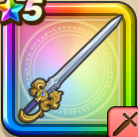

オチェアーノの剣
攻略班 8.5点 / マヒャド斬りドラゴン斬りブレードガードウィンドスラッシュグランエスパーダ※錬成で強化可能
くわしい特徴
【レベル別習得スキル】 Lv1【バトマス】攻撃力+5 Lv1マヒャド斬り（消費MP：3）氷を剣にまとわせて斬り敵1体に威力130%のヒャド属性斬撃ダメージを与える Lv10ドラゴン斬り（消費MP：5）ドラゴン系に威力200%それ以外の系統には130%の斬撃ダメージを与える Lv15ブレードガード（消費MP：7）自身のガード率を1段階上げる Lv20ウィンドスラッシュ（消費MP：25）敵全体に210％のバギ属性斬撃ダメージ後、たまに守備力を1段階下げる Lv30グランエスパーダ（消費MP：29）敵1体に威力410%のヒャド属性斬撃ダメージを与え、まれに追加で威力100%のデイン属性斬撃ダメージを与える Lv35マシン系へのダメージ+5% Lv40ゾンビ系へのダメージ+5% Lv45攻撃時+2%の確率で眠りを与える Lv50攻撃力+12錬成スキル改1ウィンドスラッシュ改（消費MP：30）敵全体にガードやみかわしされない威力270%のバギ属性斬撃ダメージを与え、たまにしゅび力を下げる改2グランエスパーダ改（消費MP：38）敵1体に威力550%のヒャド属性斬撃ダメージを与え、追加で威力150%のデイン属性斬撃ダメージを与える改3マシン系へのダメージ+10%改4錬成ぶき特別演出解放・メガモン討伐結果発表時に特別演出が追加・武器の見た目に特別なエフェクトが追加改5グランエスパーダ改のダメージ+2%改6グランエスパーダ改のダメージ+2%改7グランエスパーダ改のダメージ+3%改8グランエスパーダ改のダメージ+3%改9グランエスパーダ改のダメージ+4%改10いきなりまもりのたて（消費MP：武器毎に異なる）戦闘開始時に悪い状態変化とすべての状態異常をふせぐ加護が自動で宿る(効果ターンは武器毎に異なる)改11グランエスパーダ改のダメージ+8%改12いきなりきあいため（消費MP：5）戦闘開始時にきあいをため、次に与える斬撃・体技ダメージが一撃だけ倍になる(効果1ターン)改13グランエスパーダ改のダメージ+12%改14グランエスパーダ改のダメージ+15% 【限界突破スキル】 1凸スキルの斬撃・体技ダメージ+5% 2凸スキルの斬撃・体技ダメージ+5% 3凸スキルの斬撃・体技ダメージ+5% 4凸スキルの斬撃・体技ダメージ+5%